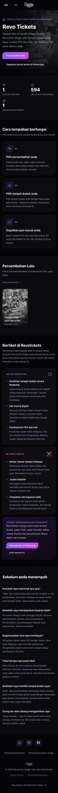
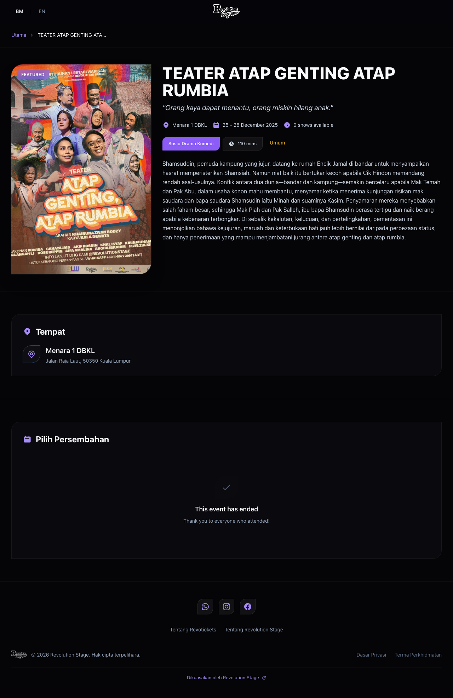
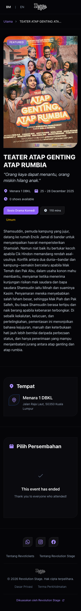
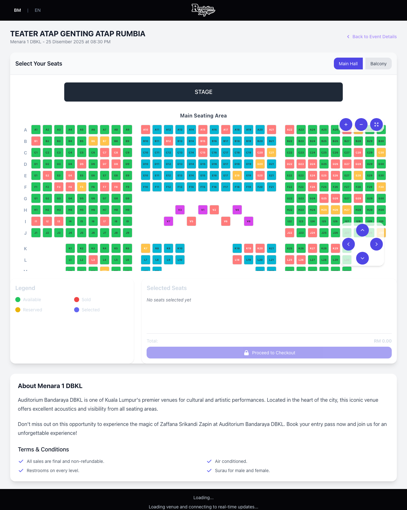
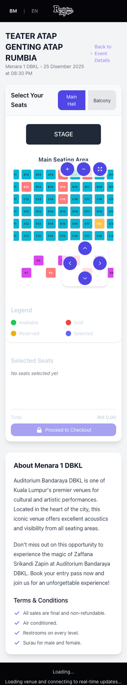

RevoTickets, for Revolution Stage · 2025–2026 · the build
building RevoTickets
RevoTickets is the event-ticketing platform I build for Revolution Stage, a Malaysian live-events company. This is the project-management side of it: how a small, AI-augmented team shipped a real seat-selling product in waves, the timeline it actually took, and what got cut to make a launch date. The three posts before this one dug into single hard problems. This one steps back and looks at the whole thing.
Revolution Stage puts on live theatre and music in Malaysia, and they needed a way to sell reserved seats for their own shows without handing a cut and their audience data to a third-party platform. RevoTickets is that: a bilingual (English and Malay) storefront that sells numbered seats, takes payment through the local bank rails, and hands over a scannable entry pass. I own the product and the build. The interesting part, for a project-management write-up, is that this got built the way a much larger team would build it, by one to two people leaning hard on AI, and the discipline that made that possible is worth more than any single feature.
Here is what it looks like today, on a laptop and on a phone.
Storefront, desktop. The poster-led, near-black canvas is deliberate: event artwork is the hero.

Same page, phone. Most buyers arrive on a phone from a WhatsApp link, so this is the real front door.
02 · what it had to do
What it had to do
A ticketing platform sounds like a solved problem until you write down the list. Model a real hall, seat by seat. Show it to a buyer who is choosing where to sit, and keep that map honest while other people are grabbing seats at the same second. Take money through FPX, which is how Malaysians actually pay online, and survive that gateway going quiet mid-transaction. Issue a wallet pass. Let door staff check people in from a phone. Do all of it in two languages, and do it as a proper multi-tenant system so more than one organiser can run on it later.
None of those are hard on their own. The job was getting all of them to stand up together and stay standing while the requirements kept moving. The event page below is the middle of the funnel: pick a show, read the synopsis, go choose seats.

An event page on desktop: poster, synopsis, and the list of dated shows to pick from.

The same event on a phone, single column, poster first.
03 · how it got built
Shipped in waves, behind a gate
The method that made a small team move like a big one was boring and strict: break the work into small waves, plan each wave in writing before touching code, review it, and then lock the result behind an automated gate so it could never regress. Every wave left the product shippable. Nothing sat half-finished on a branch for a month.
1
Plan in writing
Each wave started as a short plan document: what it delivers, what it explicitly does not, and how to tell it worked. Deciding scope on paper is cheaper than deciding it in code.
2
Review before building
Plans got a review pass, sometimes from a second opinion, before implementation. More than one design decision got reversed at this stage, which is exactly where you want to reverse it.
3
Build the wave
Implement the slice, keep the app shippable at the end of it. A wave that leaves the product broken is not a wave, it is a debt.
4
Ratchet the gate
Lock the win behind an automated check that fails the build on a regression. The design system, for instance, is enforced by a test that rejects a stray colour or an off-scale spacing value. You only have to win each fight once.
04 · the timeline
The timeline it actually took
The heavy building happened across 2026, in overlapping tracks rather than a tidy single file. Language coverage and a framework upgrade came first, then the seat-map foundation and the design-system re-skin ran alongside the venue and booking work, and the public storefront got its own revamp near the end. The chart below is the shape of it.
gantt
title RevoTickets, the 2026 build
dateFormat YYYY-MM-DD
axisFormat %b
section Foundations
Bahasa Malaysia coverage :2026-05-15, 12d
Bullet Train 1.44 upgrade :2026-05-17, 6d
section Seat map
Seat-map foundation (Plans A-E) :2026-07-08, 10d
Hall builder :2026-07-20, 33d
section Design system
Foundation + ratcheting gate :2026-07-03, 12d
Primitives and waves :2026-07-15, 32d
section Venues and bookings
Bookings wave (PR A-C) :2026-07-03, 20d
Venue-streamline (Waves 0-3) :2026-07-22, 12d
section Storefront
Public marketing revamp :2026-08-13, 12d
section Launch
GA hardening (M1) :2026-08-25, 24d
The 2026 build, in overlapping tracks. July was the peak: a single week hit 134 commits, and the month as a whole ran past 350.
A fair caveat on the numbers, because the Work section is for honest facts and not sales copy: the repository was started from a Bullet Train template years earlier, so a raw commit count includes inherited history and overstates the bespoke work. The delivery intensity is real though, and the peak-week figure is the part I would stand behind: 134 commits in seven days is what a deadline looks like.
05 · a build inside the build
The seat map, a project of its own
The single biggest line item was the seat map, and it earned that. It is not one screen, it is a builder for staff to lay out a hall, a preview, a live buyer view, and the engine that draws them all from the same source. It went through its own set of plans (seat identity, a serializer, real-time updates, roles, then a cutover) before it was trustworthy. If you want the gory detail of how a right-to-left row keeps its aisle in place, that is the first post in this series. Here is the buyer's-eye result, on both screens.

The seat map on desktop: colour-coded availability, aisles, a stage, and live status over a socket.

The same map on a phone, with pan-and-zoom controls, because most seats are picked on a small screen.
06 · the scale
What is under the hood
For a sense of the surface area one or two people were keeping in the air, here is the count as it stood mid-year. An independent bottom-up estimate put a from-scratch rebuild of this at roughly 1,700 hours of work.
34
Domain models
61
Database tables
215
Migrations
~14.3k
Lines of Ruby
Ninety-six controllers, seventeen background jobs, a fistful of service objects, thirty Stimulus controllers on the front. It is not a small app pretending to be big. It is a real one that a small team kept honest with tests and gates.
07 · cutting to ship
What got cut, and why that mattered
The most useful project-management work on RevoTickets was deciding what not to build. A launch date only exists if you are willing to move things off the near list, and we moved plenty. The organiser analytics dashboard, the people merge-and-invite flows, and the in-app help centre were all split out of the design-system re-skin so it could actually finish, rather than sprawling until it never did. A planned move to self-hosted infrastructure got deferred whole, with only the one piece that a nearer feature needed pulled forward. The hall builder shipped English-only on purpose, because translating an internal staff tool that only a handful of people use was not worth holding a launch for.
Every one of those was written down as a decision with a reason, not lost in a backlog. That is the difference between deferring something and dropping it.
08 · the road to launch
The road ahead
RevoTickets is pre-launch as I write this, and it is not vapour: it has already sold real seats to real Revolution Stage shows through the checkout described in these posts. The plan from here is staged, roughly six milestones over two years, each one a fundable chunk rather than a wishlist. The near one is the only one with a date I would defend.
1
Public launch (GA) · target Sep 2026
The money path hardened, payment reconciliation automated, an accessibility pass, load testing, and launch operations. Most of this milestone is making the payment side boringly reliable.
2
Organiser self-serve · late 2026
An analytics dashboard, settlement and payout statements, and the people invite-and-merge flows that were deferred out of the launch.
3
Infrastructure and scale · early 2027
The deferred move to self-hosted infrastructure, monitoring and backups, tighter security headers. Housekeeping that buys headroom.
4
Promoter platform · mid 2027
Multi-tenant white-labelling for other promoters, plus a discovery and marketplace portal so events are findable, not just linkable.
5
Mobile and offline · late 2027
An installable app, a sturdier offline check-in scanner for the door, and wallet-pass polish.
6
Marketplace and regional · 2028
Recommendations, an additional payment gateway for cards and international buyers, and a partner API.
09 · what I took from it
What I took from it
Waves beat sprints of heroics. Small, shippable slices behind an automated gate let a tiny team move fast without leaving a mess to trip over later.
Write the decision down. "We are deferring X because Y" in a plan file is worth ten times the same thought lost in a chat, because future-you argues with the reason, not the vibe.
A launch date is a scope decision, not a calendar one. The near milestone shipped because things were taken off it, on purpose, with reasons.
Be honest about the numbers. Inherited history inflates a commit count, an internal tool can stay one-language, and a plan is not a promise. Saying so costs nothing and buys trust.
If the single-problem deep dives are more your thing, the three posts below pull apart the seat map, the payment path, and the seat-selling race one at a time.
theRevoTickets deep dives
22.08.2026
The Aisle That Moves
The seat-map engine, and the right-to-left row that has to mirror without moving its aisle.